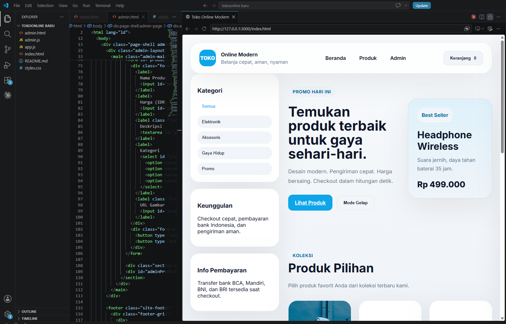

PT Penerbit Erlangga
1 Tahun 2 BulanIT Hardware
Selama bekerja di PT Erlangga, saya mengembangkan keahlian dalam mendukung infrastruktur IT, menangani helpdesk support, Pengalaman ini meliputi troubleshooting sistem, user support .
Halo, saya
Selamat datang di portofolio saya. Di sini Anda dapat melihat proyek, kemampuan, dan pengalaman yang saya kerjakan sebagai IT Helpdesk dan IT DATA SCIENCE.
Lihat Proyek
Tentang Saya
Saya memiliki pengalaman di science data dan security operation, bahkan it support bahkan saya memiliki kemampuan dalam menganalisis data dan memberikan solusi teknologi yang efektif.
Pengalaman Kerja
IT Hardware
Selama bekerja di PT Erlangga, saya mengembangkan keahlian dalam mendukung infrastruktur IT, menangani helpdesk support, Pengalaman ini meliputi troubleshooting sistem, user support .
Pendidikan
Program Studi Informatika
Menyelesaikan gelar sarjana di bidang Informatika dengan prestasi akademik yang baik. Selama studi, fokus pada pengembangan keahlian dalam data science, pemrograman, dan analisis data. Dengan Judul SKRIPSI "ANALISIS KEAMANAN PEMBAYARAN DIGITAL DENGAN MENGGUNAKAN ALGORITMA RANDOM FOREST DAN FEATURE ENGINERING"
Proyek

Menganalisis faktor yang mempengaruhi perubahan IPK mahasiswa Dengan menggunakan Streamlit.

Toko online berbasis web dengan fitur pencarian, keranjang belanja, dan sistem pembayaran.
Kontak
Hubungi saya untuk proyek website, aplikasi, atau desain yang ingin Anda wujudkan. Kirim pesan menggunakan tombol di bawah atau melalui email langsung.